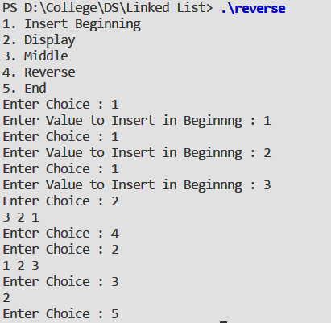

To perform following operation on linked list :
#include <stdio.h>
#include <stdlib.h>
typedef struct node {
int value ;
struct node* next ;
} node ;
node* getnewnode() ;
node* insertbeg( node* , int);
void displayll( node* );
node* reverse( node* );
int middle( node* );
int main(){
int ch , n , temp ;
node* start = NULL ;
printf("1. Insert Beginning \n");
printf("2. Display \n");
printf("3. Middle \n");
printf("4. Reverse \n");
printf("5. End \n");
do{
printf("Enter Choice : ");
scanf("%d" , &ch );
switch(ch) {
case 1 :
printf("Enter Value to Insert in Beginnng : ");
scanf("%d" , &n);
start = insertbeg(start , n);
break;
case 2 :
displayll(start);
break;
case 3 :
temp = middle(start);
printf("%d\n" , temp );
case 4 :
start = reverse(start);
break;
}
} while ( ch != 5) ;
}
node* getnewnode(){
node* new = malloc(sizeof( node ) );
return new;
}
node* insertbeg( node* start , int x){
node* q = getnewnode() ;
q->value = x ;
q->next = start ;
start = q ;
return start ;
}
void displayll(node* start){
while(start != NULL ){
printf("%d " , start->value);
start = start->next ;
}
printf("\n") ;
}
node* reverse(node* start){
node *q , *p ;
if(start == NULL || start->next == NULL ){
return start ;
}
p = start->next ;
start->next =NULL ;
while(p != NULL ){
q = p->next ;
p->next = start ;
start = p ;
p = q ;
}
return start ;
}
int middle(node* start){
node *p , *q ;
p = start ;
q = start ;
while(p != NULL && p->next != NULL ){
p = p->next->next ;
q = q->next ;
}
return q->value ;
}
